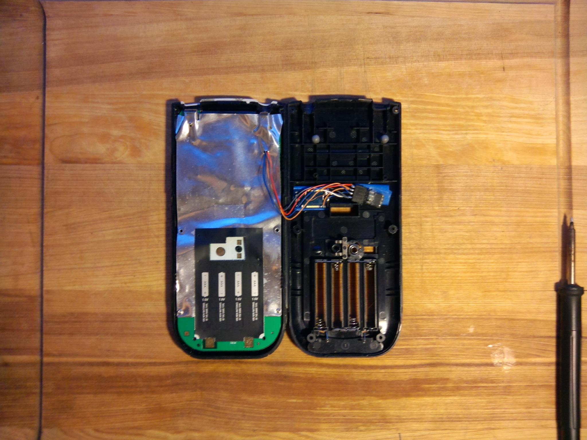
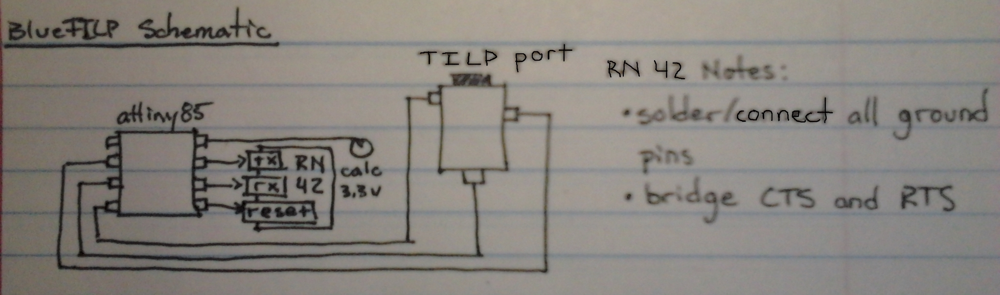

I put an ATtiny13 and RN-42 Bluetooth module into a TI-84+ graphing calculator and wrote assembly code to create a TI Link Protocol to Bluetooth bridge that works in both directions. It's transparent to the calculator's operating system, but makes the calculator appear as a regular serial port to any connected computer. I used that property to fly a drone with my calculator .
Code is at github here .
